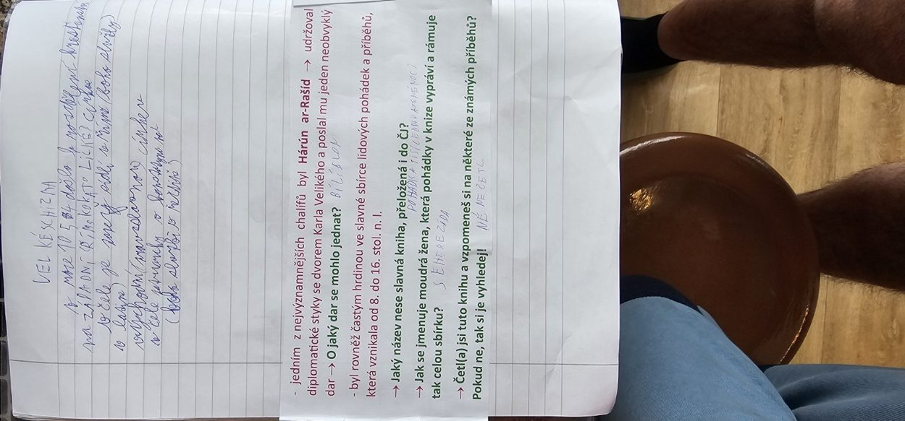

1054
Velké schizma – 1054
Roku 1054 se křesťanství rozdělilo na západní, římskokatolickou církev s papežem v Římě, a východní, pravoslavnou církev s patriarchou v Konstantinopoli.
- 1054 Velké schizma: rozkol západní a východní církvei v tématu Byzantská říše
Co znamená schizma?
Schizma znamená rozkol, rozdělení. V roce 1054 došlo k rozdělení křesťanství na dvě církve:
| Západní církev | Východní církev |
|---|---|
| římskokatolická | pravoslavná |
| v čele papež | v čele patriarcha |
| sídlí v Římě | sídlí v Konstantinopoli |
| bohoslužby v latině | bohoslužby v řečtině |
Proč je to důležité: obě církve existují dodnes. Na západě Evropy (i u nás) převládli katolíci, na východě pravoslavní.
Souvislost: Konstantinopol byla hlavním městem Byzantské říše (téma Byzantská říše).
Paměťový obraz
- Dvě poloviny kostela: v levé papež v Římě čte latinsky, v pravé patriarcha v Konstantinopoli řecky; mezi nimi trhlina s číslem 1054.
Vyzkoušej se
Odpověz nahlas, teprve pak otevři odpověď. Procvičit náhodně
Co znamená slovo schizma?
Rozkol, rozdělení.
Co se stalo roku 1054?
Křesťanství se rozdělilo na západní (římskokatolickou) a východní (pravoslavnou) církev.
Kdo stál v čele západní církve a kde sídlil?
Papež v Římě.
Kdo stál v čele východní církve a kde sídlil?
Patriarcha v Konstantinopoli.
V jakém jazyce byly bohoslužby na západě a na východě?
Na západě v latině, na východě v řečtině.
Zápis ze sešitu
Fotka stránky sešitu
